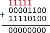

Nous avons déjà vu comment représenter les entiers positifs, nous allons maintenant nous intéresser aux entiers relatifs.
La première idée qui pourrait nous venir à l'esprit est, sur un nombre comportant n bits, d'utiliser 1 bit pour représenter le signe et n-1 bit pour représenter la valeur absolue du nombre à représenter. Le bit de signe étant le bit dit "de poids fort" (c'est à dire le bit le plus à gauche), ce bit de poids fort serait à 0 dans le cas d'un nombre positif et à 1 dans le cas d'un nombre négatif.
un exemple : on représente l'entier 5 sur 8 bits par 00000101, -5 serait donc représenté par 10000101
En utilisant la méthode décrite ci-dessus, représentez -15 (représentation sur 8 bits)
Il existe un énorme inconvénient à cette méthode : l'existence de deux zéros, un zéro positif (00000000) et un zéro négatif (10000000) !
Ce problème est, pour plusieurs raisons qui ne seront pas développées ici, rédhibitoire. Nous allons donc devoir utiliser une autre méthode : le complément à deux
Avant de représenter un entier relatif, il est nécessaire de définir le nombre de bits qui seront utilisés pour cette représentation (souvent 8, 16 , 32 ou 64 bits)
Prenons tout de suite un exemple : déterminons la représentation de -12 sur 8 bits
Comment peut-on être sûr que 11110100 est bien la représentation de -12 ?
Nous pouvons affirmer sans trop de risque de nous tromper que 12 + (-12) = 0, vérifions que cela est vrai pour notre représentation sur 8 bits.
Dans l'opération ci-dessus, nous avons un 1 pour le 9e bit, mais comme notre représentation se limite à 8 bits, il nous reste bien 00000000.
En utilisant le complément à 2, représentez -15 (représentation sur 8 bits)
Il faut noter qu'il est facile de déterminer si une représentation correspond à un entier positif ou un entier négatif : si le bit de poids fort est à 1, nous avons affaire à un entier négatif, si le bit de poids fort est à 0, nous avons affaire à un entier positif.
Représentez sur 8 bits l'entier 4 puis représentez, toujours sur 8 bits, l'entier -5. Additionnez ces 2 nombres (en utilisant les représentations binaires bien évidemment), vérifiez que vous obtenez bien -1.
Quel est le plus petit entier négatif que l'on peut représenter sur 8 bits ?
Quel est le plus grand entier positif que l'on peut représenter sur 8 bits ?
Dans le "À faire vous-même 4" vous avez dû normalement trouver 10000000 (soit -128) et 01111111 (soit 127) dans le "À faire vous-même 5". Plus généralement, nous pouvons dire que pour une représentation sur n bits, il sera possible de coder des valeurs comprises entre -2pn-1 et +2pn-1 - 1
Quelles sont les bornes inférieure et supérieure d'un entier relatif codé sur 16 bits ?